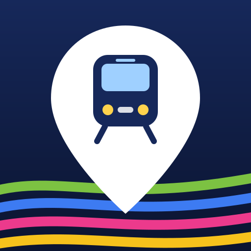

bangkoktransit.com is a third-party site, not affiliated with or endorsed by BTS. Its times are real but unofficial, it may stop working or ask for a sign-in, and this phone contacts it directly while a covered station is open. For personal use.
It then opens full-screen from its own icon, works offline for the map and timetables, and asks for location the first time you tap Use my location.
Your location is used only on this device to find nearby stations. The map is drawn locally; no map tiles or location data are sent to any server.